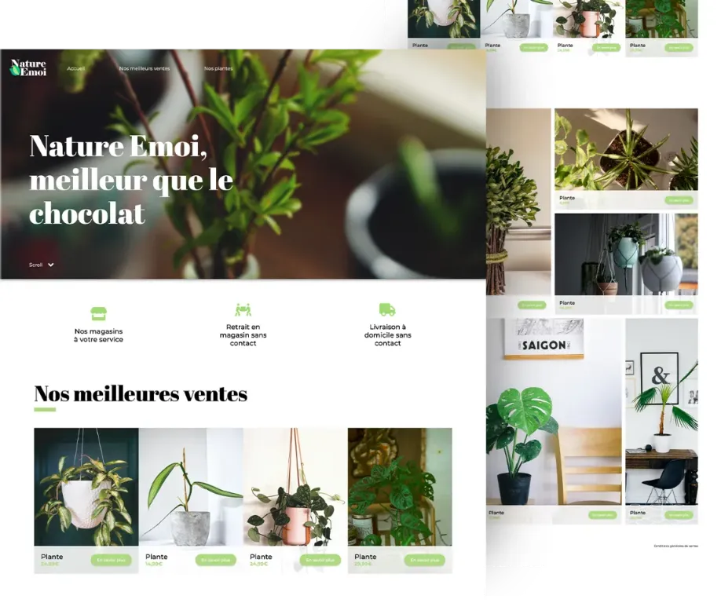

BIOLEM
BIOLEM- HTML5
- CSS3
- JS
- Responsive Web Design
Integration of an existing model, adaptability of the page for all media (desktop, tablet and mobile). Implementation of front-end elements with javascript.
08/2021 · 6 hours · for a school-based project
Clauvallis
Clauvallis- HTML5
- CSS3
- Bootstrap v5
- JS
- Responsive Web Design
The goal was to use the framework css bootstrap v5 for the integration of an already existing model, and the adaptability of the page for all supports (computers, tablet and mobile).
06/2021 · 6 hours · for a school-based project

Nature Emoi
Nature Emoi- HTML5
- CSS3/SASS
- Responsive Web Design
CSS challenge from the internet. Integration of an already existing model, adaptability of the page for all supports (computers, tablet and mobile). The goal of the exercise was to familiarize myself with the BEM notation for writing CSS.
05/2021 · 5 hours · for a personal project